DATA ANALYSIS PORTFOLIO
ZHOU YU
Data Analyst · Pharma & Healthcare
MSc in Clinical Medicine (Tianjin University), focused on business performance analysis and data governance in pharma. I work backwards from the business question to metric definitions, extract and aggregate data with SQL, and deliver reports and dashboards that support decisions.
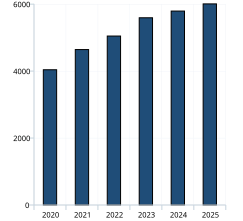


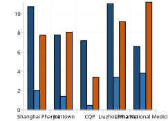
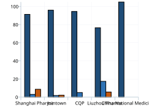

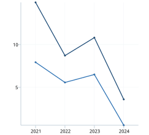
Experience
EXPERIENCE & EDUCATION ↘
Education and research, laid out on a timeline
ABOUT ME
Hi, I am Yu Zhou
I turn numbers scattered across annual reports, financial notes, user behaviour and industry publications into conclusions that support decisions. I have delivered three end-to-end analysis projects, plus multimodal clinical data governance and disease-risk modelling.
CAREER PATH
Tianjin University · MSc Clinical Medicine
Research focus: clinical research (data mining and statistical analysis) and bioinformatics (gut microbiome and metabolomics). One first-author SCI paper (CAS Tier 2) and four co-authored papers.
Cohort Data Governance and Risk Warning Analysis
Processed 1,688 multi-source records and built an analysis ledger; constructed an insulin-resistance metric and applied Cox regression and survival analysis for risk stratification; model C-index improved from 0.611 to 0.646 with an NRI of 18.4%.
Disease Risk Prediction and Visualisation System
Integrated 840 multi-source records; used Lasso-logistic regression for feature selection and compared four models; selected XGBoost (AUC 0.854) and built an online prediction system with R Shiny.
Tianjin Polytechnic University · BEng Biomedical Engineering
Weighted average 87.15, class rank 6/90; awarded the Internet Plus competition second prize and academic scholarships.
Small-Diameter Vascular Graft Development (National project, team lead)
Led a five-person team through project application, feasibility analysis and technical proposals; coordinated task allocation and R&D progress; wrote the closing report.
Projects
SELECTED PROJECTS ↘
Open a card for data sources, methods and all charts
Business Performance Analysis & Benchmarking of Pharmaceutical Distributors
Five A-share pharmaceutical distributors, FY2020-FY2025. Cross-source validation traced one restatement; a four-dimension metric framework and 8 SQL query types quantified that business mix sets the gross-margin ceiling, benchmarked against Ministry of Commerce and National Bureau of Statistics data.
Expansion Quality & Working-Capital Efficiency of Pharmacy Chains
Five A-share pharmacy chains, FY2020-FY2025. Using goodwill and working-capital data to quantify expansion quality: 4 of 5 chains grew revenue without profit, goodwill-to-equity reached 90.57%, working capital tied up for 99-196 days, and a composite risk score flagged impairment exposure.
PROJECT 01
Business Performance Analysis & Benchmarking of Pharmaceutical Distributors
2025 — 2026 · 5 A-share distributors · FY2020-FY2025
Pharmaceutical distribution has entered a low-growth phase. The project answers two questions: is growth still profitable, and where do the differences between companies come from?
WHAT I DID
- Data governance: collected 30 financial and 143 segment records across 5 companies; built a data dictionary to align currency, units and the attributable-profit basis. Cross-source validation flagged one restatement (2.2% revenue gap); traced it to the annual report and applied the comparable basis with an audit trail.
- Metric framework: designed a four-dimension framework (growth, profitability, operating efficiency, business mix) and wrote 8 types of SQL analysis using window functions and CTEs.
- Analysis: covered trend, structural, peer-benchmarking and attribution analysis, benchmarked against Ministry of Commerce and National Bureau of Statistics industry data.
- Delivery: 7-page analysis report, Excel dashboard (8 native charts, 8 KPI cards) and a 2-page portfolio summary.
KEY FINDINGS
- Growth without profitability: revenue rose from RMB 404.0bn to 600.8bn (CAGR 8.26%) while net profit CAGR was only 0.97% and gross margin fell 2.46pp.
- Cost control was the only offset: the operating expense ratio fell from 7.64% to 6.00%, so profit divergence came from the expense side, not revenue.
- Business mix sets the gross-margin ceiling: wholesale 5.8%-7.5% < retail 13%-16% < manufacturing 19%-57%; correlation with high-margin revenue share reached 0.872.
- Leaders kept outperforming: sample growth exceeded the industry by 3.0-7.0 percentage points for four straight years; CR3 rose from 86.13% to 87.78%.
CHARTS · click to enlarge
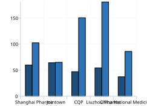
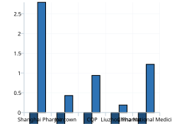

PROJECT 02
Expansion Quality & Working-Capital Efficiency of Pharmacy Chains
2025 — 2026 · 5 A-share pharmacy chains · FY2020-FY2025
Pharmacy chains expanded rapidly through M&A, accumulating goodwill and working-capital pressure. SQL builds the metrics, Tableau visualises them.
WHAT I DID
- Data governance: collected 35 financial records including goodwill; aligned units and definitions, then validated. All 35 records reconciled against a second data source with no discrepancies.
- SQL analysis: dimension + fact tables with a metric view; 8 query types using window functions (LAG, RANK, MAX OVER) and CTEs, covering growth quality, M&A risk, working-capital efficiency and a composite risk score.
- Tableau: built four views - growth vs profitability divergence, goodwill risk, working-capital efficiency and expense structure - into an interactive dashboard.
KEY FINDINGS
- Expansion diverged from profitability: 4 of 5 chains grew revenue without profit (Yixintang -19.75%, Jianzhijia -10.03%, Laobaixing -9.26%).
- Goodwill risk varied widely: goodwill-to-equity ranged from 26.85% (Yixintang) to 90.57% (Jianzhijia) and 85.89% (Laobaixing).
- Working capital was heavy: inventory plus receivable days totalled 99-196 days in FY2025, highest at Jianzhijia (195.6 days).
- Yifeng Pharmacy was the only chain to grow both revenue and profit: revenue CAGR 13.20%, net profit CAGR 16.92%, net margin 6.87%, ROE 15.01%.
- Growth decelerated sharply: sample growth fell from 27.59% in 2022 to 0.23% in 2025.
CHARTS · click to enlarge

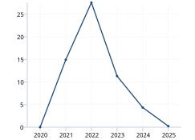
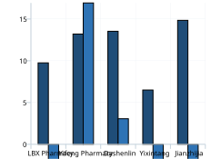
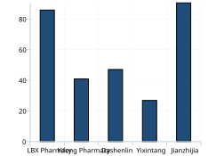
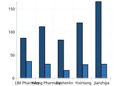
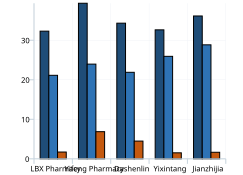
PROJECT 03
JD Consumer Behaviour & Operations Strategy Analysis
2018-02-01 — 2018-04-15 · 183,828 events · 140,715 users
Following the structure of a business-analysis notebook, the project answers five questions: who the users are, what they prefer, whether they are loyal, how they convert and why shops grow. SQL handles extraction and aggregation; business conclusions and a dashboard design are the final outputs.
WHAT I DID
- Data preparation: audited 183,828 rows x 20 fields, handled missing values, duplicates and time logic, and retained 183,827 valid events. Sparse age/city values remain Unknown; rating values of 0/-1 are excluded from rating analysis.
- User profile and retention: analysed gender, age, city tier and membership structure; calculated weekly pageviews, browse depth and D1 retention.
- Product and segment preference: compared category and brand pageviews with orders, identified top-3 categories by age and gender, and measured adoption of products launched within 30 days.
- RFM and funnel: scored R, F and an M breadth proxy on a 1-5 scale using the NTILE logic; analysed view, cart, order and interaction behaviour while separating the order/view size ratio from the true overlap conversion.
- Store operations and dashboard: analysed zero-order shares by store age, rating versus traffic, category shop counts and top-3 concentration; delivered a four-page dashboard specification and build guide.
KEY FINDINGS
- The user base is older and lower-tier: male users account for 61.2%, users aged 46-55 and 56+ account for about 76.3%, and Tier 3-5 cities contribute the largest share.
- Retention is the main weakness: weighted D1 retention is only 1.70% and average daily D1 retention is 1.53%; browse depth remains stable at about 1.09-1.12.
- Preference concentrates on mature categories: Phone, Coat and Tea lead pageviews, while only 3.98% of order users bought a product launched within 30 days.
- Direct purchase dominates: 99.70% of order users never carted; only 32 users both carted and ordered, so the cart behaves like a save/compare tool.
- Rating is not traffic: the rating-pageview correlation among valid-rating shops is -0.012, and 59.25% of all shops have zero orders.
- Category competition differs: Outdoor Sports and Electronics have higher top-3 shop concentration, while Food, Beauty and Clothes are more fragmented.
CHARTS · click to enlarge
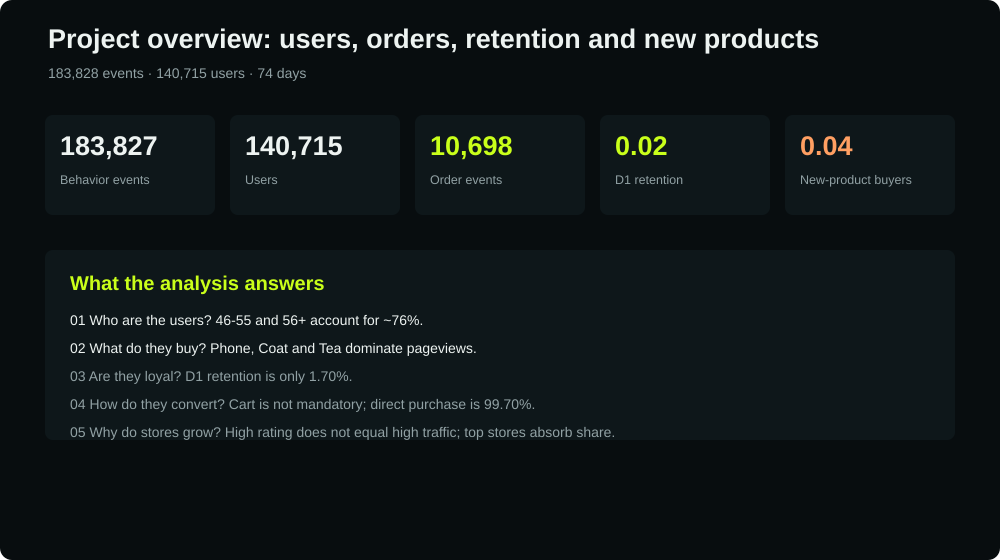
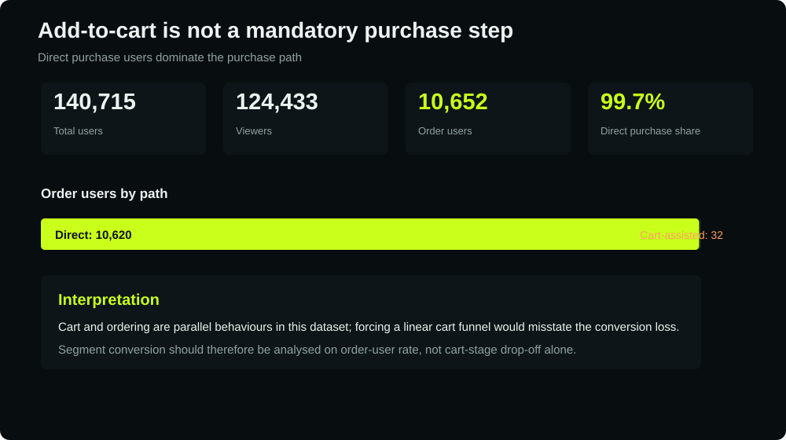
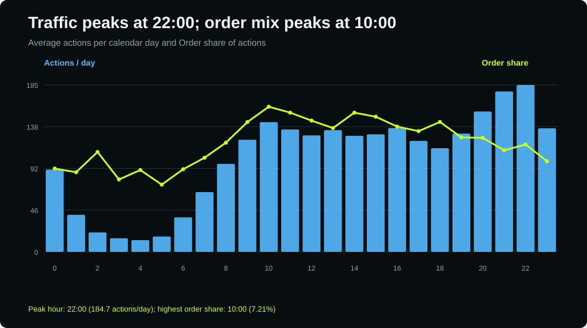
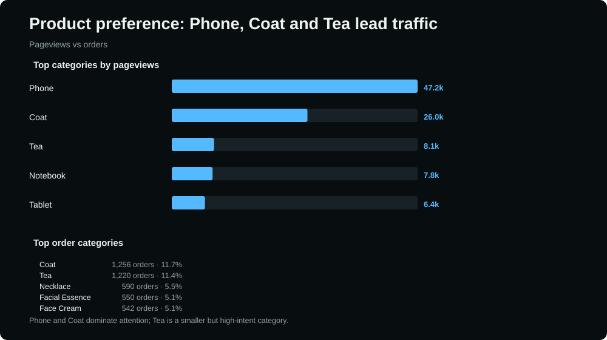
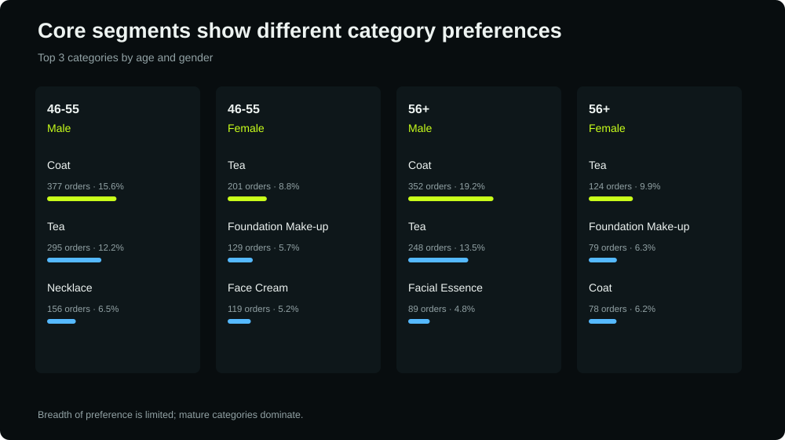
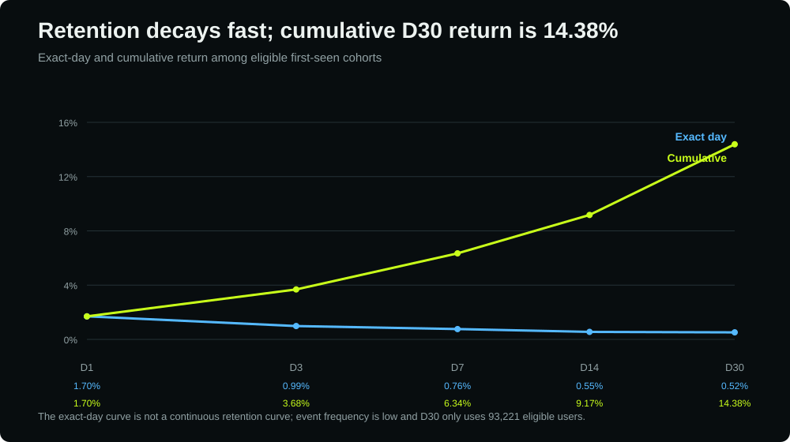
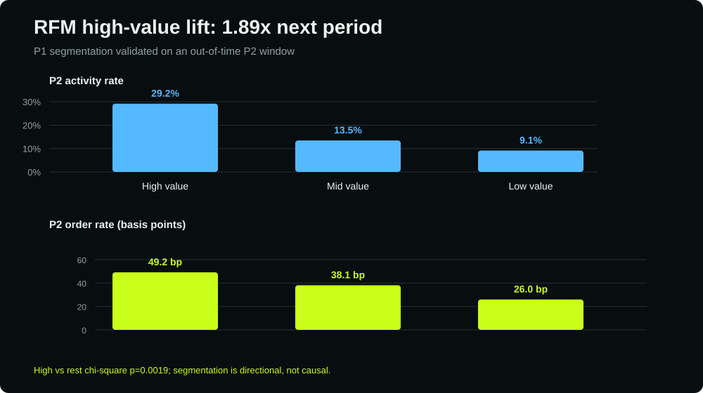
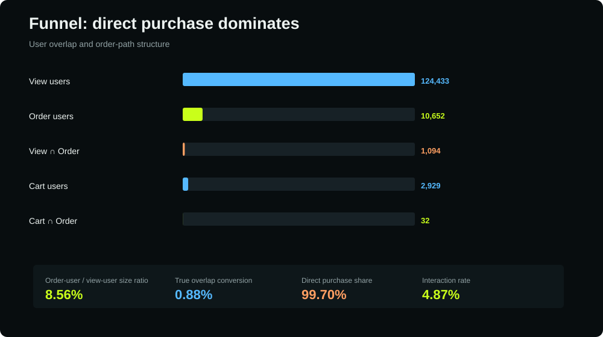
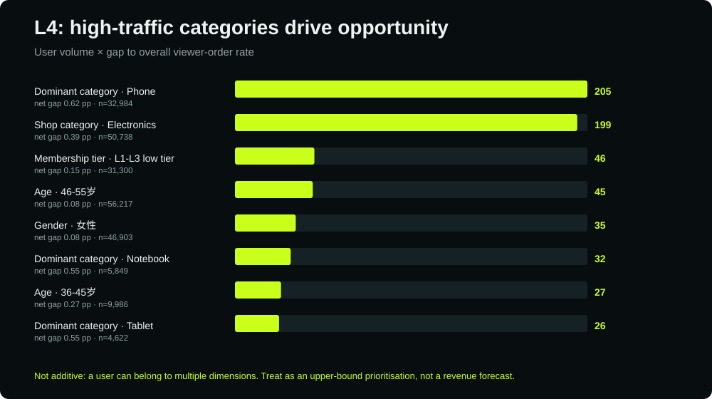
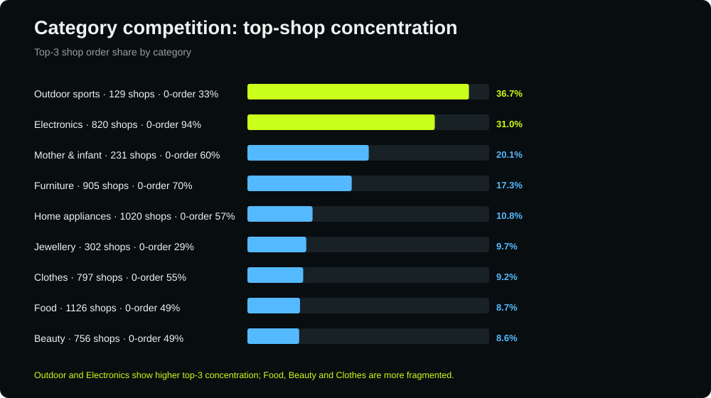
Capabilities
CAPABILITIES ↘
Organised as: can handle the data - can get the metrics right - can explain the business
Data Processing & Governance
Data dictionary and metric definitions, multi-source integration, cleansing and validation, outlier and missing-value handling, cross-source reconciliation, audit trails.
- Definitions
- Reconciliation
- Outlier handling
Tools & Languages
SQL (joins, aggregation, window functions, CTEs), Python, R, Excel (pivot tables, functions, charts), Tableau, SPSS.
- SQL
- Python
- R
- Excel
- Tableau
Statistics & Modelling
Descriptive statistics, hypothesis testing, logistic and Cox regression, survival analysis, risk stratification; machine learning (Lasso, XGBoost) and model evaluation (AUC, F1, Brier, C-index, NRI).
- Regression
- Survival analysis
- ML
Business Analysis
KPI framework design, trend / structural / benchmarking / attribution analysis, industry research, report and dashboard delivery.
- KPI design
- Benchmarking
- Reporting
Contact
LET'S TALK ↘
Happy to discuss data analysis roles and share the data-sourcing and governance details